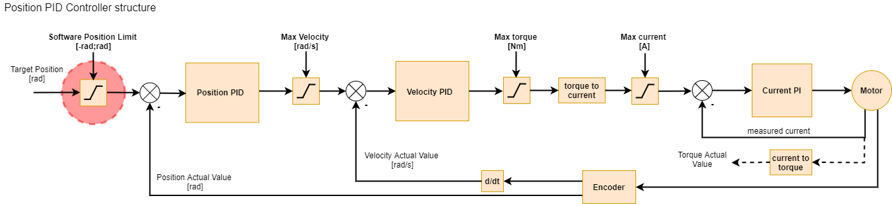
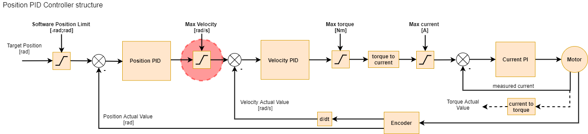
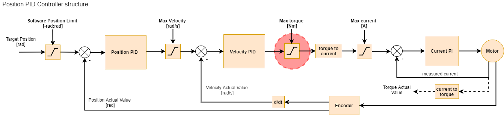
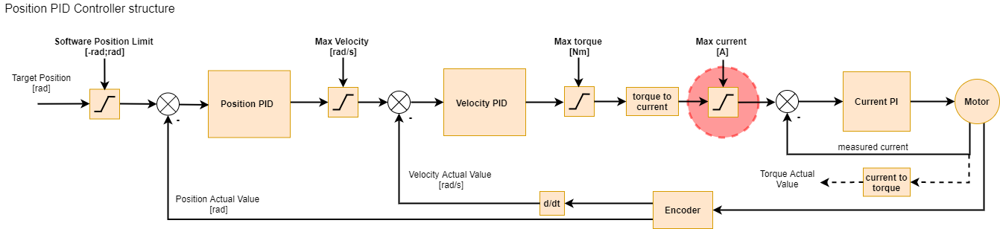

Safety#
Communication Watchdog#
MD drivers feature an Communication Watchdog Timer. This timer will shut down the drive stage when
no FDCAN frame has been received in a specified time. This is to protect the drive and its
surroundings in an event of loss of communications, for example by physical damage to the wiring. By
default, the watchdog is set to 200ms. This time can be set to any value in the range of 1 to 2000ms
using candletool md config can command. When the watchdog is set to 0, it will disable the timer,
however, this can lead to dangerous situations, and it is not a recommended way of operating MD.
Warning
We do not recommend disabling the CAN watchdog timer!
Recuperation#
MD brakes by utilizing regeneration strategy - it havests energy of the rotating motor, pushing it back into the DC bus. As MD is targeted for mobile robots applications, this allows for more efficient operation and recharging the battery of the robot.
Recuperation however can however be dangerous in systems not prepared for that. While working with stationary applications, powered by a power supply unit (PSU) it is important to make sure the circuit can tolerate voltage rises and dissipate the energy that can be put into the bus. This can be done by:
using two-quadrant power supply (current source/sink operation),
utilizing voltage chopper,
using PDS with braking resistor (BR) module.
While working with battery-powered systems, make sure:
the battery can be charged from MD bus (ie. no dc-dc converters in between),
the battery can handle expected repuperation current levels,
there is suitable protection for voltage rises, when the battery is full.
Safety limits#
Safety limits are implemented to limit the actuator parameters, to protect the controller or motor from overheating, as well as the surrounding environment from too-powerful actuator movements. Limits apply to: position, velocity, torque, phase current, and temperature of the MOSFETs and the motor.
The limits are applied in cascading manner, with highest priority:
driver current limit, (highest priority),
motor current limiter,
torque limiter,
position/velocity limiters (lowest priority).
EXAMPLE
Lets assume the actuator is set up in Velocity PID mode, with kP = 1.0, and rotor is stationary.
Assume limits are:
Velocity limit: 5 rad/s
Torque limit: 3 Nm
Motor Current limit: 1A
Torque constant (Kt): 1 Nm/A
Driver Current limit: 20A (md20)
Now we command the actuator to spin at target velocity = 10 rad/s.
The following chain of events will happen internally on the actuator:
The velocity command is clipped to Velocity limit, from 10 rad/s to 5 rad/s - a Motion Status warning bit is set,
Velocity PID regulator computes requested:
torque = velocity error * kP->(5 rad/s - 0 rad/s) * 1.0 = 5 Nm,Torque gets clipped to the Torque limit, from 5Nm to 3Nm - Motion Status warning bit is set,
Requested current is computed:
Torque * Kt = current->3Nm * 1 Nm/A = 3A,The requested current is then clipped by Motor Current Limit from 3A to 1A,
Resulting 1A is being applied to the motor, as it is lower than Driver Current Limit.
Position Limit#
Position limit is respected only in Impedance / Position PID / Profile Position modes. When target
position, set by the user, exceeds the <position limit min : position limit max> param range the
target is limited to that range, and a motion warning is generated. Attempt to
start the motor outside the range will generate a motion error.
{kind=link}

Note
Setting both Position limit min and max, to 0.0, will disable the position limiter completely.
Velocity Limit#
Velocity limit is respected only in Velocity PID / Profile Velocity and Impedance / Position PID /
Profile Position modes. When target velocity, set either by the user or the Position PID, exceeds
the max velocity param the target is limited, and a motion warning is generated.
{kind=link}

Torque Limit#
The next limit is the max torque limit which can be set using the CANdle script. This limit applies
to maximum torque and is expressed in Nm. It is respected in all motion modes. When target torque,
set either by either of the controllers, exceeds the max torque param the target torque is limited
and a motion warning is generated.
{kind=link}

Note
if the torque bandwidth is set to a low value it is possible to read torque values that are above limits when external torque is applied (for example during impacts). This is only true in transition states - when the load is constant the limits will work as expected. This is because with low torque bandwidth the internal torque PI controllers may be too slow to compensate for rapidly changing torque setpoint when hitting the torque/current limit. If you care about accurate torque readout be sure to play with the torque bandwidth parameter and possibly increase it from the default level.
Current Limit#
Let’s start with the max current limit:
{kind=link}

This setting limits the maximum current (and thus torque) the motor controller can output. It is the
last user-configurable limit in the control scheme. The maximum current is set using the motorIMax
register. This setting can be saved in the non-volatile memory so that it is always loaded on the
actuator power-up. To estimate the maximum current setting for a particular motor, you should use
the following formula:
where
\( I[A] \) - calculated current in Amps
\( \tau \) - desired maximum torque
\( G_r \) - gear ratio
\( K_t \) - motor’s torque constant
for example let’s calculate the max current limit for AK80-9 motor, for a 2Nm max torque:
\(\tau = 2 Nm\)
\(G_r = 9:1 -> 9\)
\(K_t = 0.091 Nm/A\)
\( I [A] = \frac{2[Nm] \cdot \frac{1}{9}}{0.091[\frac{Nm}{A}]} \)
\( I [A] \approx 2.44A \)
Note
Usually this limit should be set to the highest peak torque that is allowed in the system so that it doesn’t limit the actuator performance.